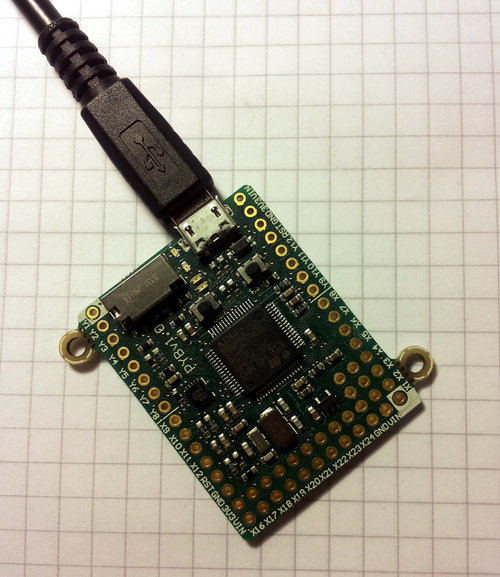

2. 运行您的首个脚本¶
不做赘述，我们于此开始在pyboard上运行Python脚本！
2.1. 连接您的pyboard¶
使用数据线将pyboard连接到您的个人电脑（Windows、Mac或Linux）。数据线连接的方式只有一种，所以你肯定不会出错。
当pyboard连接到您的个人电脑时，将立即通电并进入启动过程。绿色LED将会点亮半秒钟（或更短时间），LED熄灭即表示启动过程结束。
2.2. 打开pyboard USB驱动¶
您的个人电脑现在应识别到pyboard。下一步取决于您的个人电脑的类型：
Windows: 您的pyboard 将呈现为可移动的USB闪存驱动器。Windows将自动弹出一个窗口，或者您可能需要使用文件管理器进行这一步。
Windows也会把pyboard视为一个串行设备，并会尝试自动配置该设备。若配置成功，则取消此步骤。我们将在下面的教程中运行此串行设备。
Mac: 您的pyboard将在桌面上显示为可移动磁盘。也可能会显示为 “NONAME”。点击打开pyboard文件夹。Y
Linux: 您的pyboard将会显示为可移动介质。在Ubuntu 上，将会自动安装并弹出一个带有pyboard文件夹的窗口。 在其他Linux发行版中，pyboard可能会自动安装，也可能需要您手动安装。 在终端命令行中输入
lsblk即可看到连接的驱动的列表 和mount /dev/sdb1（使用适当的设备代替sdb1）。您可能需要以root身份来完成这一步骤。
现在您应该已将pyboard（以USB闪存驱动器的形式）连接到个人电脑了，且有一个显示pyboard驱动上的文件的窗口（或命令行）。
你所看到的驱动器即为pyboard所称的 /flash ，且此驱动应包含4个文件：
- boot.py – 此脚本在pyboard启动时运行。其为pyboard设置了多种配置选项。
- main.py – 这里面是您的Python的主程序。其在boot.py后执行。
- README.txt – 此文件包含一些启动pyboard的基本信息。
- pybcdc.inf – 此为配置串行USB的Windows驱动文件。更多信息请查阅下一教程。
2.3. 编辑 main.py¶
现在我们开始编写Python程序了，在文本编辑器中打开main.py文件。在Windows中您可使用记事本或其他编辑器。 在Mac和Linux中，您可使用您最喜欢的文本编辑器。文件打开后，您将看到其中包含一行：
# main.py – put your code here!
这一行以#字符开始，表示 注释。这种行不会执行程序，您可在这里写下关于程序的注释。
向此 main.py 文件中添加2行，使其形如下:
# main.py -- put your code here!
import pyb
pyb.LED(4).on()
添加的第一行表示我们想要使用 pyb 模块。此模块包括所有控制pyboard特性的函数和类。
添加的第二行点亮蓝色LED：首先从pyb模块中获取 ``LED``类，创建LED数字4,（蓝色LED），然后将其点亮。
2.4. 重启 pyboard¶
运行此小脚本，您需首先保存并关闭 main.py 文件，然后弹出（或卸载）pyboard USB驱动。
进行此步骤时，可将其作为普通的USB闪存驱动器。
驱动安全弹出（或卸载）后，就是最有趣的部分了：按下pyboard上的RST按键来重启和运行脚本。 RST开关是板上USB接口下面位于右边边缘的黑色小按键。
当您按下RST键，绿色LED将会快速闪烁，然后蓝色LED应亮起不灭。
祝贺您！您已成功编写并运行您的首个MicroPython程序！